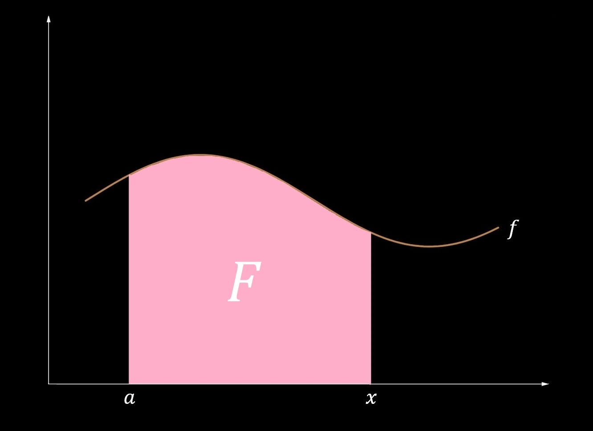
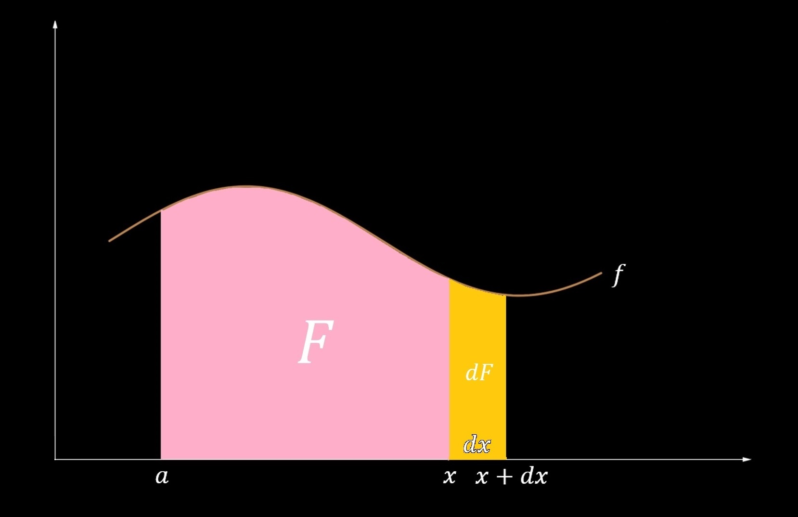

4.4 — Fundamental Theorem of Calculus
In this section we will discuss the Fundamental Theorem of Calculus (FTC), which is a two-part theorem that connects the two seemingly unrelated branches of calculus—differential calculus and integral calculus.
The first part of the FTC demonstrates that differentiation and integration are inverses of each other. Let \(f\) be a continuous function on a closed interval \([a,b]\). Part I of the FTC then states that
We compose the integrand with the "dummy variable" \(t \, \) because the argument \(x\) is already used for the upper bound. The theorem essentially states that if we integrate \(f\) and then differentiate it, we will return back to \(f\).
For Part II, let \(F\) be an antiderivative of \(f\). The definition of an antiderivative is that in which \(F'(x) = f(x)\). Let \(f\) be a continuous function on the closed interval \([a,b]\), and let \(F\) be one of the antiderivatives — of which there exist infinitely many — of \(f\). Part II of the FTC states that
We will interpret geometrically the FTC and present a proof at the end of this section.
Find the value of the following integral: $$ \int_{0}^{3} x^2 \, dx. $$
For this problem, we notice that we can use Part II of the FTC. We first need to find an antiderivative for \(x^2\). The reverse power rule states that: $$ \int x^n \, dx = \frac{x^{n+1}}{n+1} + C, n \neq -1. $$ Here, however, we neglect the constant of integration \(+C \,\) because we are working with a definite integral. Thus, an antiderivative for \(x^2\) is \(\frac{x^3}{3}\). Part II of the FTC then states that: $$ \int_{0}^{3} x^2 \, dx = {\Big[\frac{x^3}{3}\Big]_{0}^{3}} (\mathrm{Evaluate} \, \mathrm{from} \, 0 \, \mathrm{to} \, 3) $$ $$ = \frac{(3)^3}{3} - \frac{(0)^3}{3} = \bbox[border: 2px solid white, 2pt]{9}. $$ This problem is a demonstration Part II of the FTC, which simplifies dramatically the process for finding computing integrals. Complicated methods with Riemann sums are superseded by the simple process of the FTC! It is also important to note, however, that the FTC may not always be used, because some functions do not have an elementary antiderivative.
Let \(f(x)\) be a continuous function for all \(x\) defined by \(f(x) = \int_{0}^{x} g(t) \, dt \). It is known that \(g(2) = 4\). Find \(f'(2)\).
For this problem, we notice that this is a simple example of Part I of the FTC: $$ f'(x) = \frac{d}{dx} \int_{0}^{x} g(t) \, dt = g(x). $$ $$ \therefore f'(2) = g(2) = \bbox[border: 2px solid white, 2pt]{4}. $$
Part I of the FTC can be extended with the chain rule:
Let \(f(x) = \int_{2}^{x^3-1} \sin(x) \, dx \). Find \(f'(\pi)\).
We know from Part I of the FTC that $$ f'(x) = \frac{d}{dx} \int_{2}^{x^3-1} \sin(x) \, dx = \sin{(x^3-1)} \frac{d}{dx} (x^3-1) $$ $$ = 3x^2 \sin{(x^3-1)}. $$ $$ \therefore \bbox[border: 2px solid white, 2pt]{f'(\pi) = 3 \pi^2 \sin(\pi^3-1)}. $$
Let us now look at a geometric interpretation of the FTC from which we will derive a proof. Let \(f(x)\) be a continuous function on the interval \([a,x]\), and let \(F(x) = \int_{a}^{x} f(t) \, dt \). Geometrically, \(F(x)\) represents the signed area bounded by \(f\) and the \(x\)-axis.
The continuous function \(f\), the vertical line at \(x = a\), and the vertical line at \(x=x\) serve as bounds to the function \(F\), which is represented by the integral expression \(\int_{a}^{x} f(t) \, dt \).
We will take an infinitely small increment in \(x\), denoted \(dx\). This increment in \(x\) will cause the region \(F\) to increase by an infinitely small quantity \(dF\).
An infinitely small increment \(dx\) causes \(F\) to increase by an infinitely small quantity \(dF\). (The scale of \(dx\) and \(dF\) is clearly exaggerated for demonstration.)
We can then see that $$ dF = f(x) \, dx \Rightarrow $$ $$ \frac{dF}{dx} = f(x). $$
A more rigorous proof, however, applies the limit defintion of a derivative. Let \(f(x)\) be a continuous function on [a,b], and let \(F(x) = \int_{a}^{x} f(t) \, dt \). The limit defintion for a derivative, $$ F'(x) = \lim_{h \to 0} \frac{F(x+h) - F(x)}{h}, $$ can be rewritten in our case as $$ F'(x) = \lim_{h \to 0} \frac{1}{h} \Big( \int_{a}^{x+h} f(t) \, dt - \int_{a}^{x} f(t) \, dt \Big). $$ We can then use integral properties to rewrite the expression as $$ F'(x) = \lim_{h \to 0} \frac{1}{h} \Big( \int_{a}^{x+h} f(t) \, dt + \int_{x}^{a} f(t) \, dt \Big), $$ which we can then rewrite as a single integral: $$ F'(x) = \lim_{h \to 0} \frac{1}{h} \int_{x}^{x+h} f(t) \, dt. $$
Now consider the interval \([x, x+h]\). By the Mean Value Theorem for integrals, there must be a value \(c\), \(x \leq c \leq x+h \), for which $$ f(c) = \frac{1}{(x+h)-x} \int_{x}^{x+h} f(t) \, dt = \frac{1}{h} \int_{x}^{x+h} f(t) \, dt. $$
Now let us consider the value to which \(f(c)\) converges as \(h\) approaches \(0\). In other words, we are looking for \(\lim_{h \to 0} (c) \). We can apply the Squeeze Theorem here: $$ x \leq c \leq x+h. $$ $$ \lim_{h \to 0}(x) \leq \lim_{h \to 0}(c) \leq \lim_{h \to 0} (x+h). $$ $$ x \leq \lim_{h \to 0}(c) \leq x. $$ $$ \therefore \lim_{h \to 0}(c) = x \Rightarrow \lim_{h \to 0}f(c) = f(x). $$
Finally, we connect \(F'(x)\) to \(\lim_{h \to 0}f(c) \): $$ F'(x) = \lim_{h \to 0} \frac{1}{h} \int_{x}^{x+h} f(t) \, dt = \lim_{h \to 0}f(c) $$ $$ = f(x). $$ $$\tag*{$\blacksquare$}$$
For Part II of the FTC, let \(f\) be a continuous function on \([a,b]\), and let \(F\) denote its antiderivative. Let us break up the interval between \(a\) and \(b \, \) into \(n\) equal-size partitions, denoted as the set {\(x_0, x_1, x_2, ... , x_n\)}. Thus, $$ F(b) - F(a) = F(x_n) - F(x_0) $$ $$ = \Big[(F(x_n) - F(x_{n-1})) + (F(x_{n-1}) - F(x_{n-2})) + (F(x_{n-2} - F(x_{n-3}) + ... (F(x_1) - F(x_0))\Big] $$ $$ = \sum_{i=1}^{n} [F(x_i) - F(x_{i-1})]. $$
By the Mean Value Theorem, there exists a value \(c_i\), \(a < c_i < b\), for which $$ F'(c_i) = \frac{F(x_i) - F(x_{i-1})}{x_i - x_{x-1}}. $$
We know, however, that \(F\) is the antiderivative of \(f\), so $$ f(c_i) = \frac{F(x_i) - F(x_{i-1})}{x_i - x_{x-1}}. $$
Letting \(\Delta x = x_i - x_{x-1}\) and rewriting, we obtain $$ F(x_i) - F(x_{i-1}) = f(c_i) \Delta x. $$
Substituting into the summation notation, we see that $$ F(b) - F(a) = \sum_{i=1}^{n} f(c_i) \Delta x. $$
Taking the limit as \(n\) approaches infinity, we obtain $$ \lim_{n \to \infty} [F(b) - F(a)] = \lim_{n \to \infty} \sum_{i=1}^{n} f(c_i) \Delta x $$ $$ = \int_{a}^{b} f(x) \, dx. $$ $$\tag*{$\blacksquare$}$$